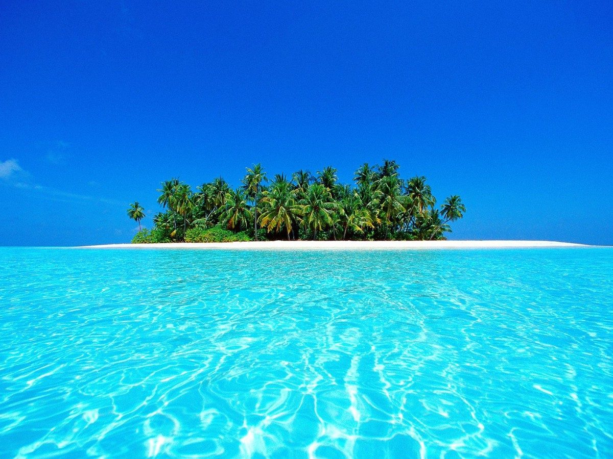

Индийский океан
Индийский океан
Индийский океан
Инди́йский океа́н — третий по площади и глубине океан Земли, составляющий около 20 % её водной поверхности. Его площадь — 76,174 миллионов км², объём — 282,65 млн км³[2]. Самая глубокая точка океана находится в Зондском жёлобе (7729 метров[3][4]).
На севере омывает Азию, на западе — Африку, на востоке — Австралию; на юге граничит с Антарктидой. Граница с Атлантическим океаном проходит по 20° меридиану восточной долготы; с Тихим — по 146°55′ меридиану восточной долготы. Самая северная точка Индийского океана находится примерно на 30° северной широты в Персидском заливе. Ширина Индийского океана составляет приблизительно 10 000 км между южными точками Австралии и Африки.